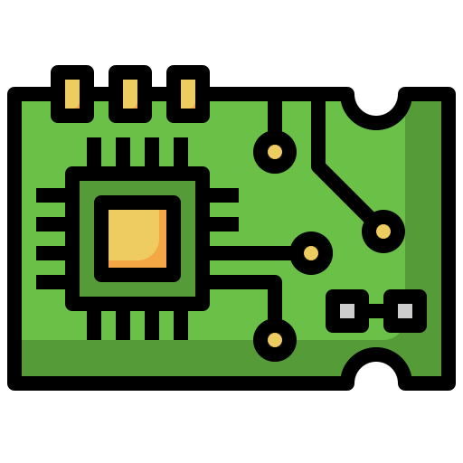

Aqui você verá os relatórios.
Resumo do projeto
Neste projeto, foi desenvolvido um semáforo utilizando um Arduino Uno e três LEDs, representando as luzes vermelha, amarela e verde. O objetivo foi demonstrar o controle de fluxo de tráfego de forma simples, utilizando conceitos básicos de programação e eletrônica. O semáforo foi programado para alternar as luzes de maneira sequencial, simulando o funcionamento real de um sinal de trânsito.